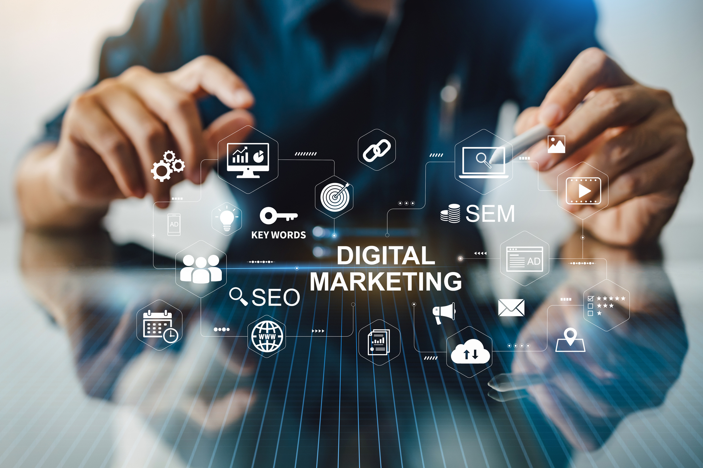

Innovaciones Empresariales
En la era digital actual, las tecnologías web han sido un catalizador significativo
para las innovaciones empresariales, transformando la manera en que las empresas
operan y se relacionan con sus clientes. Uno de los ámbitos más impactados ha sido
el marketing digital, donde herramientas avanzadas de análisis de datos, publicidad
en línea y plataformas de redes sociales han permitido a las empresas personalizar
sus estrategias de marketing y llegar a audiencias globales con una precisión sin
precedentes.
La capacidad de recopilar y analizar grandes volúmenes de datos ha
permitido a las empresas comprender mejor las preferencias y comportamientos de sus
clientes, optimizando sus campañas de marketing y mejorando la experiencia del cliente.

Asimismo, los modelos de negocio online han evolucionado drásticamente, facilitando
la creación de nuevas oportunidades de negocio y la disrupción de industrias
tradicionales. Desde el comercio electrónico hasta las plataformas de economía
colaborativa, las tecnologías web han permitido a las empresas operar sin las
limitaciones físicas y alcanzar mercados globales.
Esta transformación también ha tenido un profundo impacto en el futuro del trabajo,
donde la flexibilidad laboral, el trabajo remoto y la automatización están redefiniendo
las estructuras laborales tradicionales. Las empresas están adoptando nuevas tecnologías
para mejorar la productividad, reducir costos y ofrecer entornos de trabajo más flexibles,
lo que a su vez influye en la manera en que los empleados interactúan y contribuyen a sus
organizaciones.
Marketing Digital

El marketing digital ha revolucionado la manera en que las empresas llegan a sus
clientes. Gracias a las tecnologías web, las empresas pueden implementar
estrategias de marketing más precisas y personalizadas, utilizando herramientas
de análisis de datos, publicidad en línea y plataformas de redes sociales. Este
enfoque permite a las empresas comprender mejor las preferencias y comportamientos
de sus clientes, optimizando sus campañas y mejorando la experiencia del cliente.
Uno de los pilares fundamentales del marketing digital es el análisis de datos, que
permite a las empresas recopilar y analizar grandes volúmenes de información sobre
sus clientes y sus interacciones en línea. Utilizando herramientas de análisis como
Google Analytics y
plataformas... Leer mas...
Modelos de Negocio Online

Las plataformas online han permitido la creación de nuevos modelos de negocio innovadores
que están redefiniendo la economía global. Empresas como
Airbnb,
Uber y
Amazon han utilizado la web
para desarrollar modelos basados en la economía colaborativa, la intermediación de
servicios y el comercio electrónico, respectivamente. Estos modelos no solo han
transformado industrias enteras, sino que también han creado nuevas oportunidades
para emprendedores y pequeñas empresas.
La accesibilidad y escalabilidad que ofrece internet permiten que las empresas lleguen a una
audiencia global con una inversión inicial relativamente baja, facilitando la innovación y
la competencia. Además, las plataformas online permiten una interacción directa con los...
Leer mas...
El Futuro del Trabajo

La adopción de tecnologías web está remodelando radicalmente la fuerza laboral global,
generando cambios significativos en la manera en que trabajamos y nos relacionamos
con el mundo laboral. En este contexto de transformación, la economía gig y la
automatización emergen como fuerzas impulsoras que reconfiguran los modelos
tradicionales de empleo y contratación, planteando desafíos y oportunidades para
trabajadores y empresas por igual.
A medida que avanzamos hacia el futuro del trabajo, surge la necesidad de comprender
y abordar los impactos económicos, sociales y éticos de esta evolución tecnológica,
asegurando que el progreso sea equitativo y sostenible para todos los actores
involucrados... Leer mas...